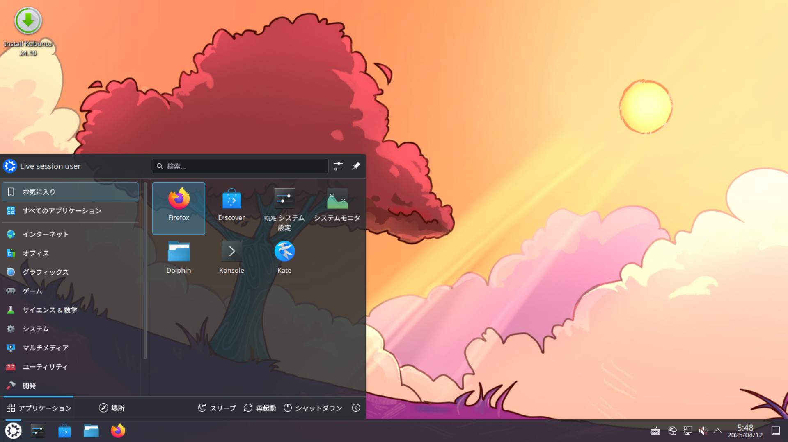
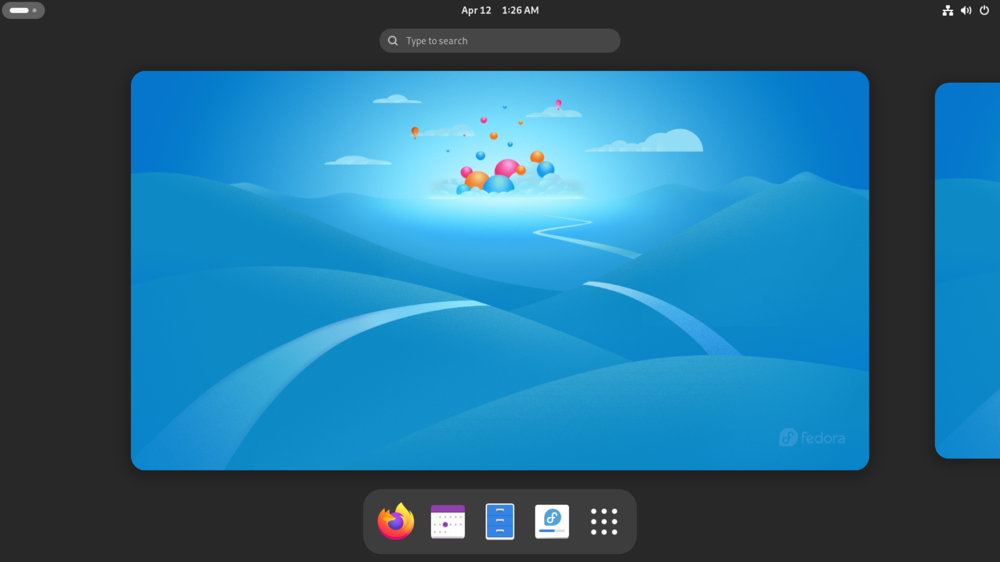
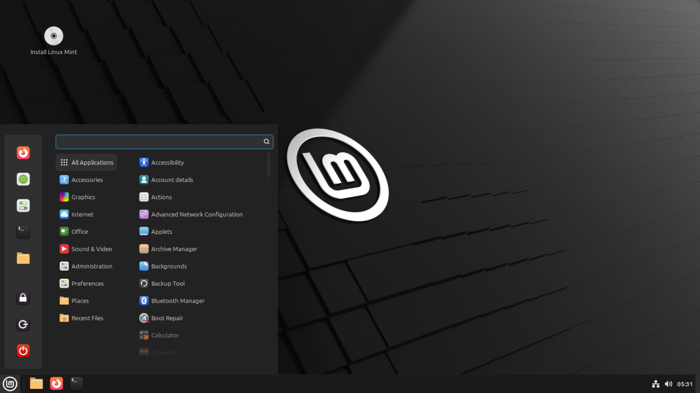
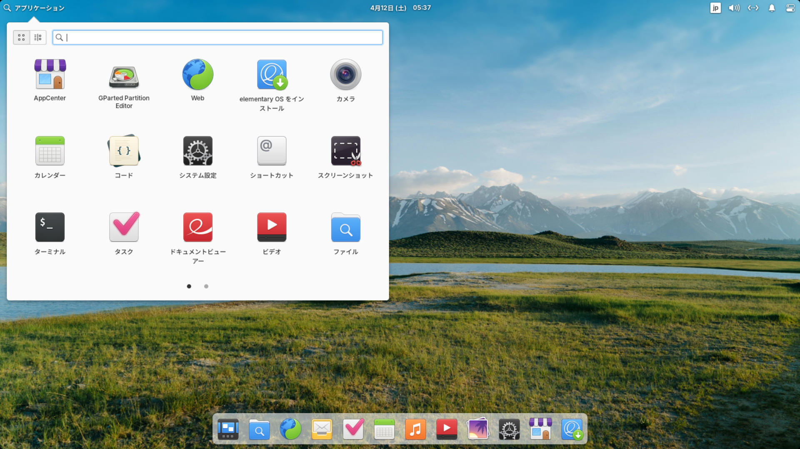
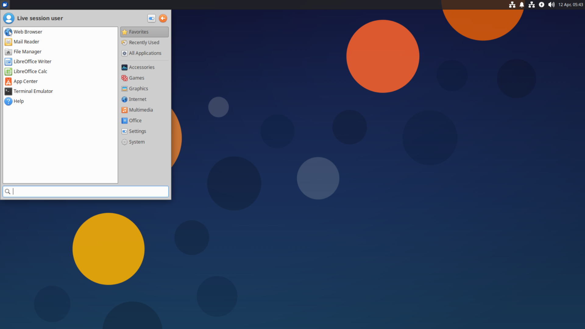
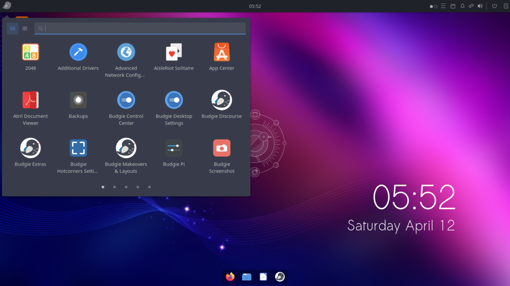
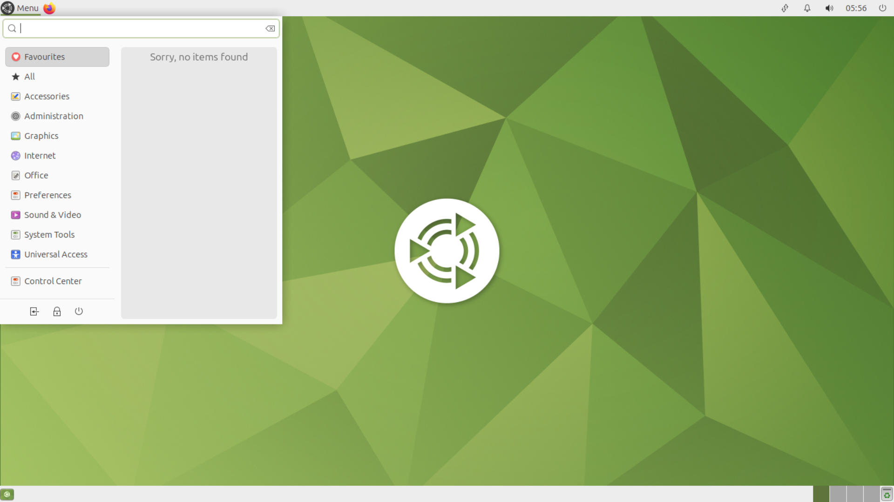
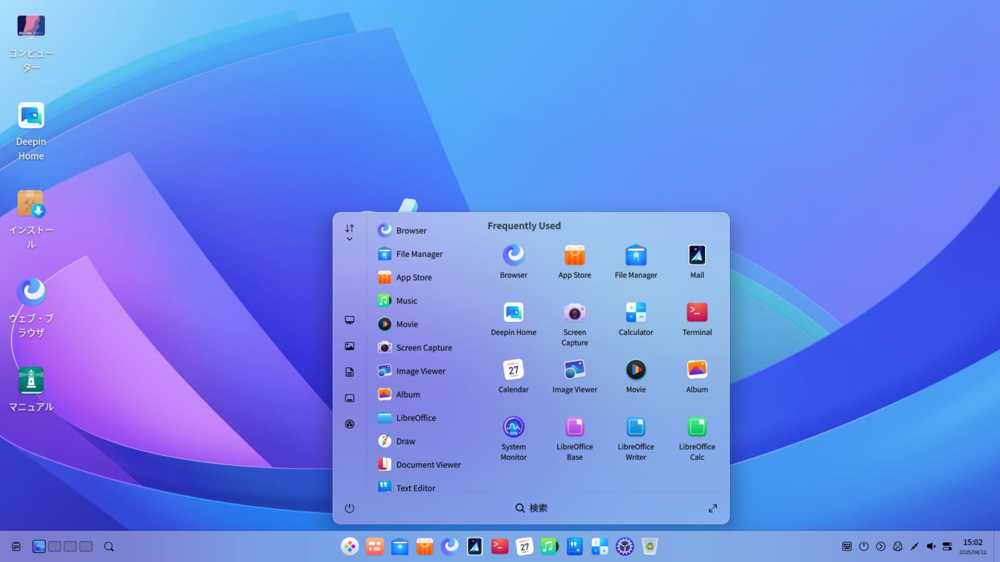
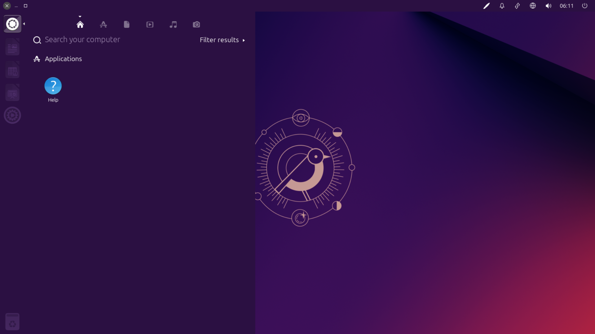
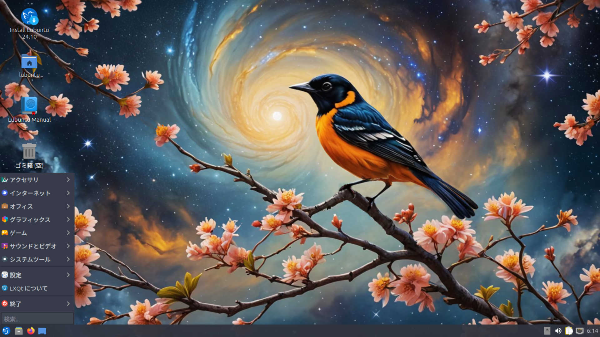

Linux のデスクトップ環境の比較
今回の記事は初めての記事ということで代表する Linux のデスクトップ環境の比較をやっていこうと思う。とにかく種類がたくさんあるが今回は有名な KDE,GNOME,Cinnamon,Pantheon,Xfce,Budgie,MATE,DDE,Unity,LXQt を比較していこうと思う。この評価は個人的な部分を含んでいることに注意してほしい。
KDE
KDE は、フリーなカスタマイズに富んだデスクトップ環境。Kubuntu で初めて触り、現在は Fedora KDE,最新版を試すときは KDE neon で触っているが個人的に GUI でのカスタマイズ性はトップクラスだと思う。KDE アプリは以前は見た目をあまりよく評価していなかったが、現在は統一感がありとても好きだ。多機能なため GNOME よりごちゃごちゃしており、KDE アプリは GNOME アプリより少しマイナスだが、使っていればどこに何があるかがなれてくるため、あまり気にならない。テーマや拡張機能を簡単に追加でき、個人的にはトップクラスのデスクトップ環境だと思った。
GNOME
GNOME は、KDE からフリーでない部分(Qt)を除去し、独自のガイドラインが定められているデスクトップ環境。Ubuntuで初めて触った。いまは Fedora、最新版を試すときは GNOME OS で触っているが個人的にデザインの統一感が好きだ。アプリを作るための細かなガイドラインが設定されていて見た目がかなり統一されているだけでなく、開発環境としても最適だと思ったが、いくつかの設定は dconf をいじらないといけなく、GUI でのカスタマイズにはやや制限があると思った。拡張機能はあるがハックであり、GNOME のバージョンアップで使えなくなる可能性があるため。たまにカスタマイズしたい人はいいと思うががっつりカスタマイズして運用していくのには難があると思った。だがアップデートで最新技術に対応したり機能がどんどん増えているので今後に期待しているデスクトップ環境だと思った。
Cinnamon
Cinnamon は、Linux Mint で初心者向きにするために作られたデスクトップ環境。Linux Mint の Cinnamon Edition を触っている。個人的にはデスクトップ環境の中でトップクラスに初心者向きだと思う。皆がイメージする Windows に似た見た目と操作感で、テーマの変更や機能の追加も簡単にできる。Linux 初心者には間違いなくおすすめするデスクトップ環境だと思う。
Pantheon
Pantheon は、elementary OS で採用されている独自の哲学を持ったデスクトップ環境。elementary OS で少し触ったがほどよく Mac っぽく、ほどよくオリジナリティがあるのが良いと思ったが、個人的には GNOME を超えるメリットを感じなかったため今は使っていない。だが独自の哲学、最小化ボタンがなかったりは個人的に最小化はあまり使わないため気に入っている。
Xfce
Xfce は、シンプルなデスクトップ環境。Xubuntu で始めた触ったが、とにかく古い見た目で、あまり使う気にはならない見た目だ、ストアアプリもなく、最新技術をほとんどサポートしておらずアップデートでもあまり変化がない。だが GNOME,KDE などの様々なデスクトップ環境用のアプリを、問題なく動かせて、サードパーティーアプリでのカスタマイズ性がかなり高いため、自分好みなシステムにしていきたい人にはぴったりだと思った。
Budgie
Budgie は Solus で採用されていて他のディストリビューションにも移植されているデスクトップ環境。Ubuntu Budgie で初めて触ったが、個人的にあまり目を引く要素はなかった。サイドバーも GNOME,KDE などの拡張機能で再現でき、カスタマイズ性もほぼないため、個人的に使うメリットは感じなかった。だがカスタマイズが面倒くさい人には初期状態からデザインがよく、いいと思うが、カスタマイズをして楽しみたい人には向いていないと思った。
MATE
MATE は、GNOME 2 のフォーク。操作感を体験できるため、たまに触りたくなるが、長期的に触ると飽きてきて、Xfce と同じくストアアプリがなく、最新技術のサポートも優れていないため、全体的に Xfce と似ていると感じた。だがたまに触りたくなるため VirtualBox 上で Fedora MATE+Compiz を動かしている。
DDE
DDE は Deepin Linux,UbuntuDDEで採用されているデスクトップ環境。Deepin Linux で初めて触ったが、個人的には初期状態での見た目は良いが、サードパーティーアプリを使うと見た目が汚くなるし、カスタマイズの幅も狭いので Bad。それなら KDEをカスタマイズしてそれっぽい見た目にした方が統一感ある。
Unity
Unity は Ubuntu に元々採用されていたデスクトップ環境。現在は Ubuntu Unity で触ることができる。Unity はこのサイトの見た目からわかるとおり 2010 年代のデザインが好きな僕にとっては、とても好きなデザイン。ただカスタマイズ性が低く、操作方法が少し独特なので、使う人を選びそうなデスクトップ環境だと思った。
LXQt
LXQt は、個人的に軽さを求めたウィンドウマネージャ風のデスクトップ環境。個人的に古いパソコンをリユースするために使うことはないが、どのデスクトップ環境も動作が遅い場合の最終手段としてなら使ってもいいかもしれない。
まとめ
結果的に、自分がデスクトップ環境に何を求めるかで決めればいいと思うが、迷ったときは、Linux 初心者は Cinnamon,自分好みにカスタマイズしたい場合は KDE,開発環境なら GNOME が良いと思った。